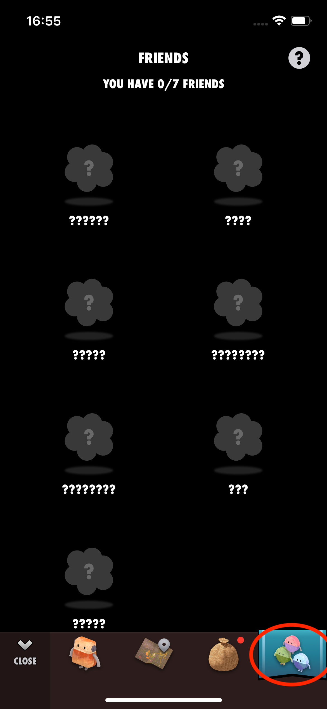

もし、ゲットしたのが6人目のフレンドだった場合、そのフレンドはまずはフレンド画面のみに表示されます（メイン画面に同時に表示できるフレンドは5人までのため）。 その場合は、フレンド画面で入れ替えを行ってください。
フレンド画面

万が一、ゲットしたはずなのにフレンド画面にも表示されていない場合、何らかの原因でゲットがうまくいかなかった可能性があります。 その場合、大変申し訳ありませんが、もう一度ミッションを行っていただくしかありません。
一度、ヘルスケアアプリを開き、歩数など必要な値のデータソース設定のご確認をおすすめします。ほかのアプリが歩数などを自動的に書き込み、結果の数値が後で変わってしまうことがあるからです。